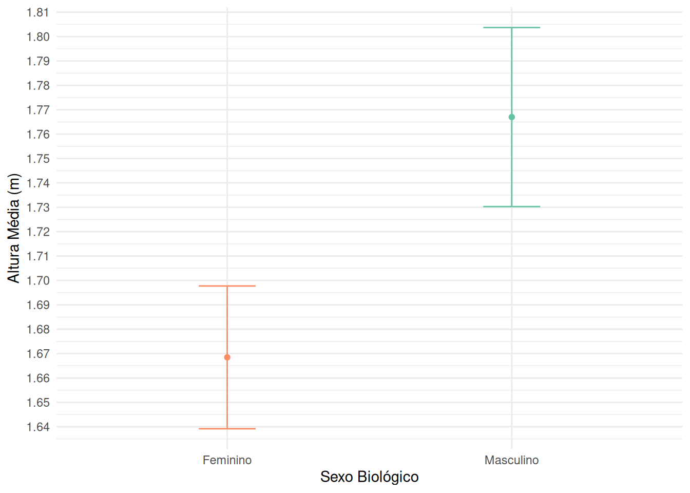

library(tidyverse)
library(janitor)5 Prática - Intervalo de confiança
Nota
Os conceitos foram apresentados na aula teórica. A seguir, temos uma prática para aplicar esses conceitos. É importante que você tenha assistido à aula antes de realizar esta prática, pois ela se baseia nos conceitos discutidos.
Nesta prática, vamos imaginar a seguinte situação: queremos saber qual é a média das alturas das pessoas que estão matriculadas nessa disciplina, considerando o sexo biológico. Para isso, criamos um formulário do Google Forms e solicitamos que as pessoas respondessem. Entretanto, nem todas as pessoas responderam, e só temos uma amostra.
Revisando alguns conceitos apresentados em aula: neste exemplo…
a população é o conjunto de todas as pessoas matriculadas na disciplina, enquanto a amostra é composta pelas pessoas que responderam ao formulário.
A partir dessa amostra, podemos fazer inferências sobre a população, como calcular a média das alturas por sexo biológico.
No entanto, como estamos lidando com uma amostra, não podemos afirmar com certeza qual é a média da população, apenas estimá-la.
Para isso, usamos o intervalo de confiança, que nos dá uma faixa de valores dentro da qual acreditamos que a média populacional esteja.
5.1 Carregar pacotes
5.2 Importar os dados
Os dados estão disponíveis em um formulário do Google. Podemos importá-los de duas formas: - usando o pacote googlesheets4 (requer autenticação) - baixar o arquivo CSV exportado do Google Forms e ler com read_csv(). Salve o arquivo CSV na pasta dados/ do seu projeto.
Neste exemplo, vamos importar o arquivo CSV exportado do Google Forms. O CSV que será utilizado é um recorte do arquivo completo, pois removemos as colunas de nome e email.
Se você fez o download do arquivo CSV, coloque-o na pasta dados/ do seu projeto. Caso contrário, você pode usar o link direto para o arquivo CSV no GitHub.
# leitura do CSV exportado do Google Forms
dados_brutos <- read_csv("dados/respostas_forms_altura.csv")# leitura de uma cópia dos dados que está salva no GitHub
dados_brutos <- read_csv("https://raw.githubusercontent.com/beatrizmilz/ESHT011-21-analise-dados-planejamento-territorial/refs/heads/main/praticas/dados/respostas_forms_altura.csv")Rows: 33 Columns: 5
── Column specification ────────────────────────────────────────────────────────
Delimiter: ","
chr (2): Sexo biológico, Turma
dbl (2): Idade, Altura (em metros)
dttm (1): Carimbo de data/hora
ℹ Use `spec()` to retrieve the full column specification for this data.
ℹ Specify the column types or set `show_col_types = FALSE` to quiet this message.Vamos dar uma olhada nos dados que importamos:
glimpse(dados_brutos)Rows: 33
Columns: 5
$ `Carimbo de data/hora` <dttm> 2025-06-23 10:04:10, 2025-06-23 10:08:13, 2025…
$ Idade <dbl> 36, 43, 20, 56, 42, 35, 36, 26, 21, 28, 29, 31,…
$ `Sexo biológico` <chr> "Feminino", "Feminino", "Masculino", "Masculino…
$ `Altura (em metros)` <dbl> 1.58, 1.68, 1.73, 1.73, 1.69, 1.68, 1.94, 1.76,…
$ Turma <chr> "Pós-graduação - Matutino", "Pós-graduação - Ma…Algo que podemos fazer é limpar os nomes das colunas, pois eles podem conter espaços, caracteres especiais ou estarem em letras maiúsculas. Vamos usar a função clean_names() do pacote janitor para isso.
dados <- clean_names(dados_brutos)Agora podemos verificar os nomes das colunas novamente para garantir que estão limpos e prontos para uso:
glimpse(dados)Rows: 33
Columns: 5
$ carimbo_de_data_hora <dttm> 2025-06-23 10:04:10, 2025-06-23 10:08:13, 2025-0…
$ idade <dbl> 36, 43, 20, 56, 42, 35, 36, 26, 21, 28, 29, 31, 4…
$ sexo_biologico <chr> "Feminino", "Feminino", "Masculino", "Masculino",…
$ altura_em_metros <dbl> 1.58, 1.68, 1.73, 1.73, 1.69, 1.68, 1.94, 1.76, 1…
$ turma <chr> "Pós-graduação - Matutino", "Pós-graduação - Matu…5.3 Conhecendo os dados
Vamos começar visualizando a distribuição das alturas por sexo biológico. Para isso, podemos criar um histograma para cada grupo de sexo biológico.
dados |>
ggplot(aes(x = altura_em_metros, fill = sexo_biologico)) +
geom_histogram(binwidth = 0.05, color = "black", show.legend = FALSE) +
labs(y = "Quantidade de pessoas",
x = "Altura (m)") +
scale_x_continuous(breaks = seq(1.50, 2.1, by = 0.05)) +
theme_minimal() +
facet_wrap(~ sexo_biologico , nrow = 2
) +
scale_fill_brewer(palette = "Set2", direction = -1)Vamos criar um box-plot para visualizar a distribuição das alturas por sexo biológico. Isso nos ajudará a entender como as alturas estão distribuídas em cada grupo.
dados |>
ggplot(aes(x = sexo_biologico, y = altura_em_metros)) +
geom_boxplot(aes(fill = sexo_biologico), show.legend = FALSE) +
geom_jitter(show.legend = FALSE, alpha = 0.5) +
labs(x = "Sexo Biológico",
y = "Altura (m)") +
scale_y_continuous(breaks = seq(1.5, 2.1, by = 0.05)) +
theme_minimal( )+
scale_fill_brewer(palette = "Set2", direction = -1)Outro ponto importante é saber o tamanho da nossa amostra. E atenção: neste caso, queremos calcular o intervalo de confiança para a média de dois grupos (sexo biológico), então precisamos calcular a amostra separadamente para cada grupo.
tabyl(dados, sexo_biologico) |> # criando uma tabela de frequências
adorn_totals("row") |> # adicionando a linha de total
adorn_pct_formatting() # formatando os percentuais sexo_biologico n percent
Feminino 13 39.4%
Masculino 20 60.6%
Total 33 100.0%5.4 Calcular a média, desvio padrão e número de respostas
Para calcular o intervalo de confiança da média das alturas por sexo biológico, precisamos primeiro calcular a média, o desvio padrão e o tamanho da amostra.
Para isso, podemos usar a função group_by() do dplyr para agrupar os dados por sexo biológico e, em seguida, usar a função summarise() para calcular as estatísticas desejadas. Essas funções foram abordadas na prática anterior.
Para calcular a média, utilizamos a função mean(), para o desvio padrão usamos sd() e para o tamanho da amostra usamos n(). Lembrando que, caso a variável tenha valores ausente (NA), devemos usar o argumento na.rm = TRUE para ignorá-los nos cálculos.
dados |>
group_by(sexo_biologico) |>
summarise(
media = mean(altura_em_metros, na.rm = TRUE),
desvio_padrao = sd(altura_em_metros, na.rm = TRUE),
tamanho_amostra_n = n(),
)# A tibble: 2 × 4
sexo_biologico media desvio_padrao tamanho_amostra_n
<chr> <dbl> <dbl> <int>
1 Feminino 1.67 0.0485 13
2 Masculino 1.77 0.0784 205.5 Calcular o erro padrão
Com essas informações, podemos calcular o erro padrão (Standard Error - SE) amostral da média:
\[SE = \frac{s}{\sqrt{n}}\]
Onde \(s\) é o desvio padrão amostral e \(n\) é o tamanho da amostra. Lembrando que o erro padrão nos dá uma medida da precisão da média amostral como estimativa da média populacional.
dados |>
group_by(sexo_biologico) |>
summarise(
media = mean(altura_em_metros, na.rm = TRUE),
desvio_padrao = sd(altura_em_metros, na.rm = TRUE),
tamanho_amostra_n = n(),
erro_padrao = desvio_padrao / sqrt(tamanho_amostra_n)
)# A tibble: 2 × 5
sexo_biologico media desvio_padrao tamanho_amostra_n erro_padrao
<chr> <dbl> <dbl> <int> <dbl>
1 Feminino 1.67 0.0485 13 0.0134
2 Masculino 1.77 0.0784 20 0.01755.6 Definindo o valor crítico
O intervalo de confiança é dado pela fórmula:
\[ IC = \bar{x} \pm (z \times SE) \]
Onde \(\bar{x}\) é a média amostral, \(z\) é o valor crítico (para um IC de 95%, \(z \approx 1.96\), quando a amostra é grande ou a variável tem distribuição aproximadamente normal) e \(SE\) é o erro padrão.
Usar um intervalo de confiança de 95% significa que queremos encontrar uma faixa de valores onde acreditamos, com 95% de confiança, que está a média verdadeira da população.
Esse valor de \(z \approx 1.96\) é usado apenas quando usamos a distribuição normal. No entanto, como estamos trabalhando com amostras pequenas, utilizamos a distribuição t de Student, e o valor crítico \(t\) (que substitui o \(z\)) é calculado com a função qt(). Neste caso, o valor muda conforme o tamanho da amostra (n) e é calculado com base nos graus de liberdade (n − 1).
5.6.1 Como calcular o valor crítico para um intervalo de confiança de 95% com a distribuição t de Student?
Podemos usar a função qt() do R, que calcula o quantil da distribuição t de Student. Para um intervalo de confiança de 95%, precisamos calcular o quantil para 0.975 (ou seja, 1 - 0.025, já que estamos considerando os dois lados da distribuição).
dados |>
group_by(sexo_biologico) |>
summarise(
media = mean(altura_em_metros, na.rm = TRUE),
desvio_padrao = sd(altura_em_metros, na.rm = TRUE),
tamanho_amostra_n = n(),
erro_padrao = desvio_padrao / sqrt(tamanho_amostra_n),
valor_t = qt(p = 0.975, df = tamanho_amostra_n - 1) # valor crítico t para IC de 95%
)# A tibble: 2 × 6
sexo_biologico media desvio_padrao tamanho_amostra_n erro_padrao valor_t
<chr> <dbl> <dbl> <int> <dbl> <dbl>
1 Feminino 1.67 0.0485 13 0.0134 2.18
2 Masculino 1.77 0.0784 20 0.0175 2.095.7 Calcular o intervalo de confiança
ic_altura <- dados |>
group_by(sexo_biologico) |>
summarise(
media = mean(altura_em_metros, na.rm = TRUE),
desvio_padrao = sd(altura_em_metros, na.rm = TRUE),
tamanho_amostra_n = n(),
erro_padrao = desvio_padrao / sqrt(tamanho_amostra_n),
valor_t = qt(p = 0.975, df = tamanho_amostra_n - 1),
ic_inferior = media - (valor_t * erro_padrao),
ic_superior = media + (valor_t * erro_padrao)
)
knitr::kable(ic_altura)| sexo_biologico | media | desvio_padrao | tamanho_amostra_n | erro_padrao | valor_t | ic_inferior | ic_superior |
|---|---|---|---|---|---|---|---|
| Feminino | 1.668462 | 0.0484503 | 13 | 0.0134377 | 2.178813 | 1.639183 | 1.697740 |
| Masculino | 1.767000 | 0.0784119 | 20 | 0.0175334 | 2.093024 | 1.730302 | 1.803698 |
Com o intervalo de confiança calculado, podemos visualizar os resultados em um gráfico. Vamos criar um gráfico de pontos com barras de erro para representar o intervalo de confiança.
ggplot(ic_altura,
aes(x = sexo_biologico, y = media, color = sexo_biologico)) +
geom_point(show.legend = FALSE) +
geom_errorbar(aes(ymin = ic_inferior, ymax = ic_superior),
width = 0.2,
show.legend = FALSE) +
labs(x = "Sexo Biológico", y = "Altura Média (m)") +
scale_color_brewer(palette = "Set2", direction = -1) +
scale_y_continuous(breaks = seq(1.5, 2.1, by = 0.01)) +
theme_minimal()
Para discussão:
O intervalo de confiança dos dois grupos se sobrepõe? O que isso pode significar?
Como o tamanho da amostra (n) afetou o intervalo de confiança?
Como a variação nas alturas (desvio padrão) influenciou o intervalo de confiança? ## Materiais complementares
- Materiais da disciplina Ciência de Dados Aplicada ao Direito II: